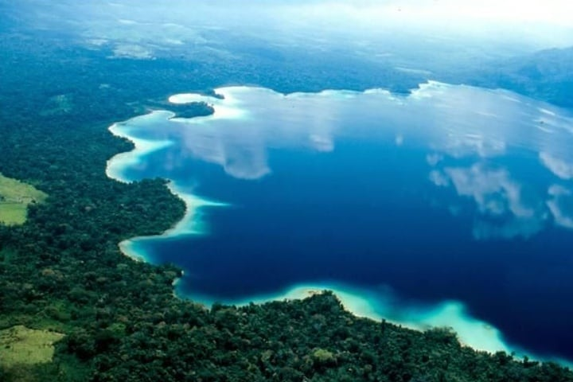

Tesoro de la selva virgen, una de las maravillas espectaculares en la selva lacandona rodeado de exuberante selva siempre verde. Donde podrás conocer grutas pinturas rupestres Admirar a las tortugas en su habitat natural, mono araña y escuchar el aullido de los saraguatos, la laguna de los cocodrilos, algunos vestigios arqueológicos, flora y fauna de la región en el recorrido de esta laguna. La Laguna Miramar es una de las más hermosas de México, tiene una extensión de 16 km2 y se encuentra en la parte sudoeste de la Reserva Integral de la Biosfera de Montes Azules a una altitud aproximada de 200 mnsm, rodeada de montañas bajas que van de 600 a 1000 mnsm. En esta laguna existen islotes y en algunos de estos ruinas arqueológicas.
Flora. En este recorrido podrás observar algunas cuevas, así como un árbol “matapalo” gigante, para adentrarnos en la montaña siempre verde, y dirigirnos a un manantial en medio de la tupida vegetación. Fauna. Esta región comprende variedad de especies endémicas y en peligro de extinción común ver, además, monos araña, saraguatos, tucanes y “perro de monte y cocodrilo, jaguar, entre otros.
Aspectos de Cultura. En la zona se encuentran pinturas rupestres, que indican de la antigüedad desde la que ha sido habitado este sitio. El Dios de los Mayas, Laguna Miramar un relieve antropomorfo labrado en la montaña por los antepasados. Además de que podrás reconocer vestigios prehispánicos, ya que esta zona ha sido habitada desde tiempos ancestrales. Servicios: Cabañas, restaurante servicios que se encuentran en la comunidad de Emiliano Zapata, renta de caballos y renta de casa de campañas y hamacas. embarcadero donde se abordan los cayucos o canoas hamaqueros y una letrina. paseo en balsas de tronco, bicicletas de montaña, caminata, senderismo, juego de mesas.